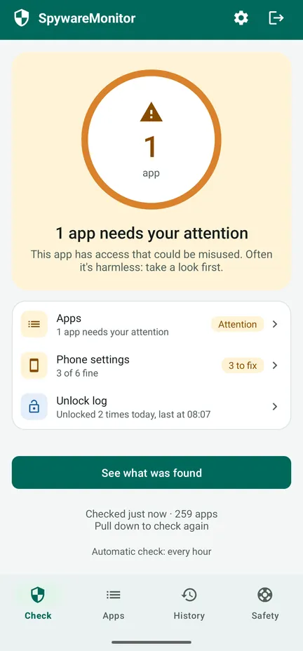
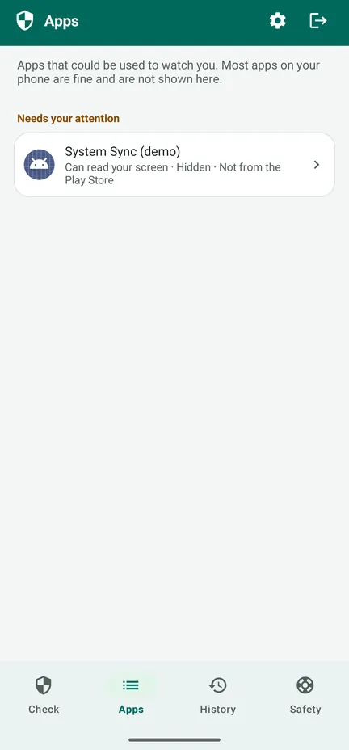
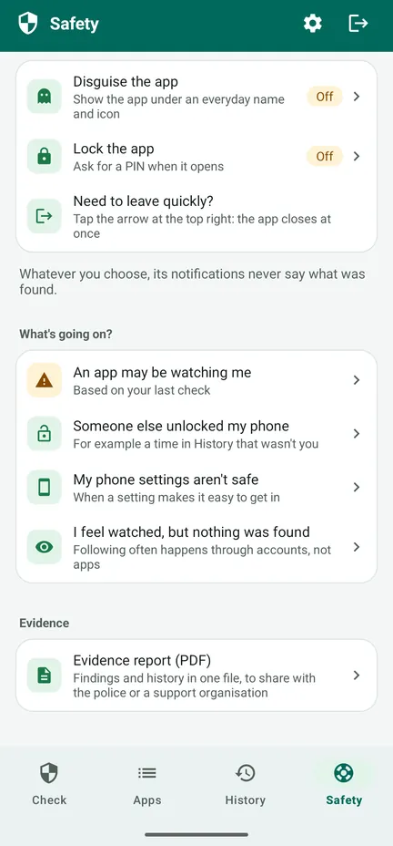
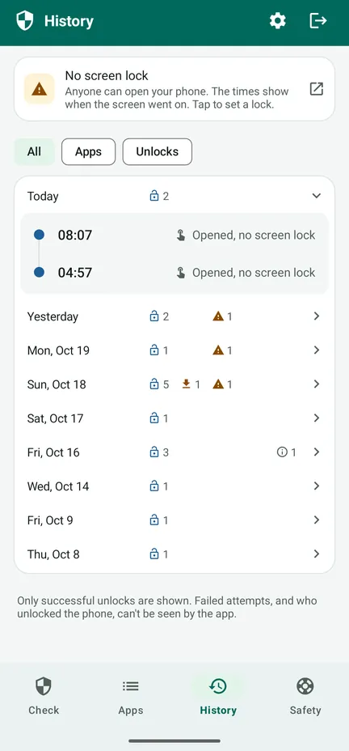

Is someone watching your phone?
SpywareMonitor checks which apps on your Android phone could be used to spy on you – and explains why, in plain language.
For anyone who fears a partner, ex or someone else secretly follows them through their phone. No internet, no ads, no account: nothing leaves your phone.
On Google Play mid-November How it works, step by step
SpywareMonitor is in testing now and comes to Google Play in mid-November 2026. Free check for Android 8 and newer. In English, Norwegian and Dutch.

Known stalkerware
131 stalkerware apps, recognised by name and signing certificate.
Hidden apps
Apps without an icon, or with a name that pretends to be part of Android.
Apps that can watch
Apps that read your screen or notifications, or act as device admin.
Phone settings
No screen lock, USB debugging or other settings that make it easy to get in.
Safe next steps
What to do, in a safe order, so you don't warn the other person.
Nothing leaves your phone
No internet permission: no ads, no tracking, no account.
See it in action
Watch the 83-second tour – how the app checks your phone, what orange and red mean, and what to do next – or look at the screens. Watch on YouTube



Free: the check
- Checks every app, and the list of known stalkerware
- Orange: access that could be misused – often harmless, so take a look first. Red: known stalkerware.
- The reasons for every app, and who made it
- Phone settings, each with a button to fix it
- The Safety tab: steps for your situation, in a safe order
- Quick exit: the arrow at the top right closes the app at once
Pro: one payment, no subscription
- Automatic checks every hour, day or week. A notification never says what was found – just the app's name and "Tap to open" – and can wait an hour.
- Unlock log: when your phone was unlocked, so you notice if someone used it
- History: when which app was installed, got access or was removed
- Evidence report (PDF) in English, Norwegian or Dutch
- Disguise and lock: show the app as Notes, Weather, Recipes or Planner, with a PIN or fingerprint
Your history is already kept in the free version. Google's purchase receipt email and Play order history name the app.
Before you remove anything
- Removing spyware can warn the person who installed it. Think about your safety first.
- Keep evidence: the evidence report, screenshots, or photos with another phone.
- Talk to someone you trust, the police or a support line, preferably from a phone that is not being watched. In Norway: 116 006. In the Netherlands: Veilig Thuis, 0800-2000.
- Change important passwords from another device.
- In immediate danger, call your local emergency number.
The app's Safety tab walks you through this for your situation. Read what to do when something is found.
The details
Everything it checks
- 131 known stalkerware apps (name and signing certificate)
- Apps without an icon in the app drawer
- Accessibility, notification access and device admin
- Apps installed from a file or another source instead of an app store
- Risky combinations, such as background location with microphone and SMS
- Screen lock, USB debugging, Developer options, apps that may install other apps, a phone managed by someone else
Privacy you can check
SpywareMonitor has no internet permission, so it cannot send anything anywhere. Its data is left out of cloud backup. The list of known stalkerware is built into the app and updated with the app. Privacy policy.
Honest about its limits
No scanner can promise a phone is 100% clean. Apps in a work profile, and spyware on a rooted phone, cannot be seen by any normal app. Following can also happen through accounts, without any app.
Languages and phones
English, Norwegian and Dutch. Android 8 and newer.
Frequently asked questions
How can I tell if there is spyware on my Android phone?
Look for apps you don't recognise that are hidden from the app drawer, can read your screen (accessibility) or your notifications, are device admins, or were installed from a file instead of the Play Store. SpywareMonitor checks all of this and compares your apps with a list of 131 known stalkerware apps.
Does SpywareMonitor send my data anywhere?
No. The app has no internet permission, so nothing can leave your phone. There is no account, no ads and no analytics.
Should I remove spyware right away?
Removing it can warn the person who installed it. Think about your safety first, keep evidence, and talk to someone you trust, the police or a support line, preferably from a phone that is not being watched.
Can SpywareMonitor find every kind of spyware?
No scanner can promise that. Apps in a work profile and spyware on a rooted phone cannot be seen by any normal app. SpywareMonitor is honest about this and shows what it can check.
Is SpywareMonitor free?
The check, the phone settings and the safety steps are free. Pro is a single payment, no subscription, and adds automatic checks with discreet notifications, History, an unlock log, an evidence report as PDF, and a disguise and PIN lock for the app.
Can I hide SpywareMonitor on my phone?
With Pro you can disguise the app as Notes, Weather, Recipes or Planner and lock it with a PIN. Its notifications never say what was found. The arrow at the top right closes the app at once. Google's purchase receipt email and Play order history do name the app.
I feel watched, but nothing was found. What now?
Following often happens through accounts, not apps. Stop location sharing in Google Maps, check the devices on your Google account and your recovery email and number, and scan for a hidden tracker. Do account changes on another device. More in the help.
Step-by-step help
More apps from Nordic Appworks
UpdateMonitor — a history of every app update, install and removal on your phone, with permission changes. RebootMonitor — when your phone was last restarted. Like SpywareMonitor: offline and without ads.
Contact
Questions or feedback: support@spywaremonitor.app
The list of known stalkerware comes from Echap's stalkerware indicators, licensed CC BY 4.0.